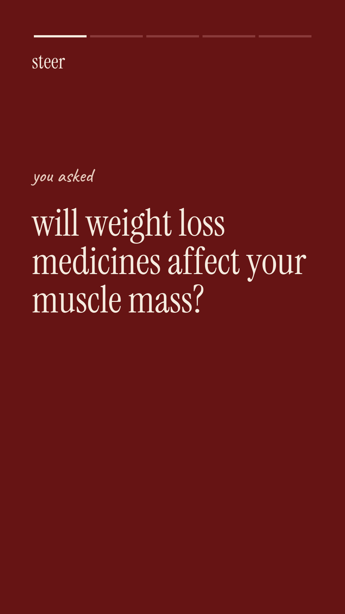
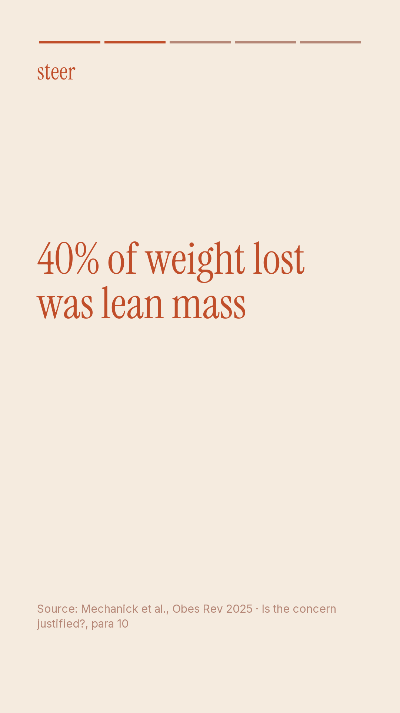
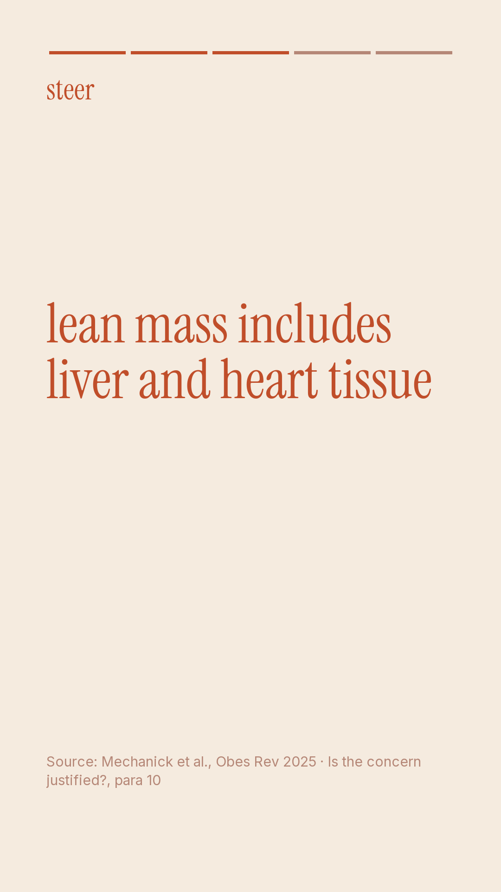
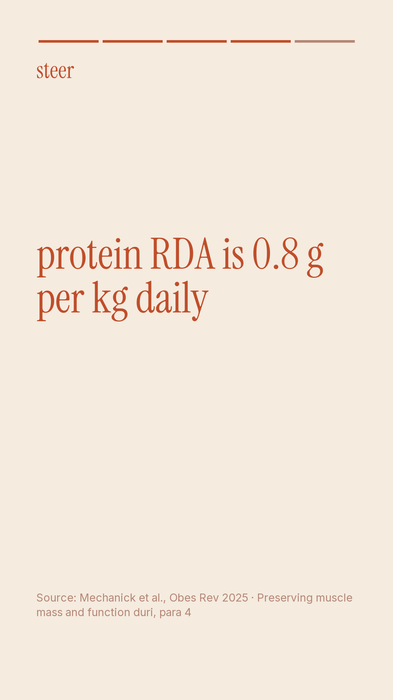

Doctor review · Mechanick et al., Obes Rev 2025
Message: Protecting strength while taking GLP-1 medicines requires doctor-led screening, personalized nutrition, and a clear long-term plan.
Why: Indian adults considering GLP-1 medicines frequently worry about losing strength and muscle alongside weight. By directly addressing trial findings and limitations without naming specific drugs, we address worries transparently. Emphasizing doctor screening, personal plans, and long-term habits positions Steer as a trusted metabolic health club.
Why: Indian adults considering GLP-1 medicines frequently worry about losing strength and muscle alongside weight. By directly addressing trial findings and limitations without naming specific drugs, we address worries transparently. Emphasizing doctor screening, personal plans, and long-term habits positions Steer as a trusted metabolic health club.
0 flag(s) from the automatic checks: none
Posts, line by line, with their sources

carousel slide 1
weight loss worries · will GLP-1 medicines affect your muscle mass? · it is a common concern. let us look at what clinical trial data actually shows.
no claim (hook or sign-off)

carousel slide 2
the trial numbers · in the STEP-1 trial, lean mass decreased alongside weight · people lost an average of 17.32 kg vs 2.65 kg with placebo, including 6.92 kg total lean mass vs 1.48 kg with placebo.
c1 · Is the concern justified?, para 10 · match 1.0
“In the semaglutide‐treated (2.4 mg once weekly) group, body weight was reduced by an average of 17.32 kg during the treatment period (vs. 2.65 kg in the placebo group); this included a 6.92‐kg mean reduction in total lean mass (vs. 1.48 kg in the placebo group).”

carousel slide 3
understanding lean mass · 40% of weight lost was from lean mass · in the group receiving the medicine in the STEP-1 trial, 40% of the total body weight loss was attributable to a reduction in lean mass.
c2 · Is the concern justified?, para 10 · match 1.0
“Thus, in the semaglutide group, 40% of the reduction in body weight was due to a reduction in lean mass.”

carousel slide 4
what data misses · lean mass is not just skeletal muscle · the published STEP-1 trial data cannot determine the exact proportion of lost lean mass that was skeletal muscle versus non-fat tissues like the liver and heart.
c5 · Is the concern justified?, para 10 · match 1.0
“Although muscle usually accounts for about one‐half of lean mass, it is not possible to determine from this publication the actual proportion of lean mass that was muscle versus other non‐fat tissues such as the liver, heart, and other organs and tissues.”

carousel slide 5
daily nutrition guidance · the RDA for protein in healthy individuals is 0.8 g per kg · from protein intake to strength habits, our doctor-led plans focus on supporting your strength during weight loss.
c7 · Preserving muscle mass and function duri, para 4 · match 1.0
“Currently, the Institute of Medicine Recommended Dietary Allowance for protein in healthy people is 0.8 g/kg body weight/day.”

carousel slide 6
start with care · lose well with guidance from a doctor · get complete blood tests, doctor screening, and a personal long-term plan made for your life in India.
no claim (hook or sign-off)

static post
worried about muscle loss on weight loss medicines? · in the STEP-1 trial, 40% of weight loss was lean mass. a doctor-led plan focuses on nutrition and strength alongside treatment.
c2 · Is the concern justified?, para 10 · match 1.0
“Thus, in the semaglutide group, 40% of the reduction in body weight was due to a reduction in lean mass.”

reel scene 1
are you worried that taking weight loss medicines will affect your muscle mass? · will weight loss medicines affect your muscle mass?
no claim (hook or sign-off)

reel scene 2
in the STEP-1 trial, 40% of total body weight loss was attributable to lean mass reduction. · 40% of weight lost was lean mass
c2 · Is the concern justified?, para 10 · match 1.0
“Thus, in the semaglutide group, 40% of the reduction in body weight was due to a reduction in lean mass.”

reel scene 3
however, trial data cannot determine how much lean mass lost was skeletal muscle versus other tissues. · lean mass includes liver and heart tissue
c5 · Is the concern justified?, para 10 · match 1.0
“Although muscle usually accounts for about one‐half of lean mass, it is not possible to determine from this publication the actual proportion of lean mass that was muscle versus other non‐fat tissues such as the liver, heart, and other organs and tissues.”

reel scene 4
The Recommended Dietary Allowance for protein in healthy individuals is 0.8 g per kg of body weight daily. · protein RDA is 0.8 g per kg daily
c7 · Preserving muscle mass and function duri, para 4 · match 1.0
“Currently, the Institute of Medicine Recommended Dietary Allowance for protein in healthy people is 0.8 g/kg body weight/day.”
reel scene 5
talk to a steer doctor today for blood tests, personalized nutrition, and a clear long-term plan. · talk to a steer doctor today
no claim (hook or sign-off)
Caption
When considering GLP-1 medicines, muscle loss is a common worry. In the STEP-1 trial, 40% of total body weight loss was attributable to a reduction in lean mass. However, trial data cannot determine how much was skeletal muscle versus tissues like the liver or heart.
At Steer, keeping your strength matters. Our doctor-led club starts with detailed blood tests and medical screening. We build a personalized plan that fits your rotis, chai, and desk job, supported by nutrition, strength habits, and a planned exit.
Before you start, hear it from a doctor, not a reel.
steerclub.com
At Steer, keeping your strength matters. Our doctor-led club starts with detailed blood tests and medical screening. We build a personalized plan that fits your rotis, chai, and desk job, supported by nutrition, strength habits, and a planned exit.
Before you start, hear it from a doctor, not a reel.
steerclub.com
#metabolichealth #weightlossindia #doctorled #glp1medicines #musclehealth #healthhabits #steerclub #indianhealth #evidencebased #healthyweightloss
Hinglish
GLP-1 medicines lene se pehle muscle loss ka darr hona natural hai. STEP-1 trial mein total body weight loss ka 40% lean mass reduction se tha. Lekin trial data yeh clear nahi karta ki isme se kitna skeletal muscle tha aur kitna liver ya heart jaise tissues.
Steer mein aapki strength ka khayal rakha jata hai. Humara doctor-led club detailed blood tests se shuru hota hai. Hum aapke rotis, chai aur daily routine ke hisaab se plan banate hain, saath mein habits aur ek planned exit bhi.
Before you start, hear it from a doctor, not a reel.
steerclub.com
GLP-1 medicines lene se pehle muscle loss ka darr hona natural hai. STEP-1 trial mein total body weight loss ka 40% lean mass reduction se tha. Lekin trial data yeh clear nahi karta ki isme se kitna skeletal muscle tha aur kitna liver ya heart jaise tissues.
Steer mein aapki strength ka khayal rakha jata hai. Humara doctor-led club detailed blood tests se shuru hota hai. Hum aapke rotis, chai aur daily routine ke hisaab se plan banate hain, saath mein habits aur ek planned exit bhi.
Before you start, hear it from a doctor, not a reel.
steerclub.com
Every verified claim
| id | finding | verbatim quote | where |
|---|---|---|---|
| c1 | In the STEP-1 trial, people receiving semaglutide (2.4 mg once weekly) lost an average of 17.32 kg in body weight compared to 2.65 kg with placebo, which included a mean total lean mass reduction of 6.92 kg compared to 1.48 kg with placebo. | In the semaglutide‐treated (2.4 mg once weekly) group, body weight was reduced by an average of 17.32 kg during the treatment period (vs. 2.65 kg in the placebo group); this included a 6.92‐kg mean reduction in total lean mass (vs. 1.48 kg in the placebo group). | Is the concern justified?, para 10 |
| c2 | In the semaglutide group of the STEP-1 trial, 40% of the total body weight loss was attributable to a reduction in lean mass. | Thus, in the semaglutide group, 40% of the reduction in body weight was due to a reduction in lean mass. | Is the concern justified?, para 10 |
| c3 | The estimated muscle loss of 10% or more over 68–72 weeks of incretin-mimetic treatment equals roughly 20 years of age-related muscle decline in adults over 30 years old, which normally occurs at 3%–5% per decade. | The estimated loss of skeletal muscle in these two major trials (10% or more during 68–72 weeks of treatment) approximates the average decline in muscle mass during 20 years of aging‐related muscle loss in adults older than 30 years, estimated at 3%–5% per decade (Figure 5). | Is the concern justified?, para 11 |
| c4 | An estimated 15.9% of US adults aged 20 years or older—representing almost 30 million people—have obesity combined with low muscle mass. | A recent study estimated that 15.9% of the US adult population (≥20 years old) had obesity with low muscle mass, representing almost 30 million people. | Is the concern justified?, para 6 |
| c5 | The published STEP-1 trial data cannot determine the exact proportion of lost lean mass that was skeletal muscle versus non-fat tissues like the liver and heart. | Although muscle usually accounts for about one‐half of lean mass, it is not possible to determine from this publication the actual proportion of lean mass that was muscle versus other non‐fat tissues such as the liver, heart, and other organs and tissues. | Is the concern justified?, para 10 |
| c6 | It may take a decade or longer before research studies evaluate the long-term risk of sarcopenia or sarcopenic obesity linked to incretin-mimetic drug therapy. | It could be a decade or more before long‐term follow‐up studies evaluate the long‐term risk of sarcopenia or sarcopenic obesity associated with IMD therapy. | Is the concern justified?, para 14 |
| c7 | The Institute of Medicine Recommended Dietary Allowance for protein in healthy individuals is currently 0.8 g per kg of body weight per day. | Currently, the Institute of Medicine Recommended Dietary Allowance for protein in healthy people is 0.8 g/kg body weight/day. | Preserving muscle mass and function duri, para 4 |
| c8 | An analysis of NHANES data indicates that more than 40% of US adults do not get adequate micronutrient intake. | Unfortunately, an analysis of National Health and Nutrition Examination Survey (NHANES) data suggests that more than 40% of US adults have inadequate intake of micronutrients. | Preserving muscle mass and function duri, para 6 |
| c9 | The most precise body composition evaluation tools (MRI, CT, and DXA) carry high costs and have limited availability in outpatient settings. | The most accurate and reliable methods for assessing body composition (magnetic resonance imaging [MRI], computed tomography [CT], and DXA) have limited availability in outpatient settings and relatively high costs. | Assessing muscle mass and function, para 1 |
| c10 | Many diagnostic cutoff values for muscle function tests were established in older adults and may not accurately apply to younger age groups. | For example, diagnostic cutoffs for many muscle function tests were developed and validated in older people and may not be applicable or accurate in younger populations. | Assessing muscle mass and function, para 1 |
Thrown out by the verifier
| proposed claim | why it was rejected |
|---|---|
| In the SURMOUNT-1 trial's pooled DXA subgroup receiving tirzepatide (5, 10, or 15 mg once weekly), participants lost 10.9% of their total lean mass during the 72-week treatment period. | numbers not in the quote: 72 |
| The Physical Activity Guidelines for Americans recommend at least 150–300 minutes per week of moderate-intensity or 75–150 minutes of vigorous-intensity exercise, along with muscle-strengthening activities at least 2 days per week. | numbers not in the quote: 2 |